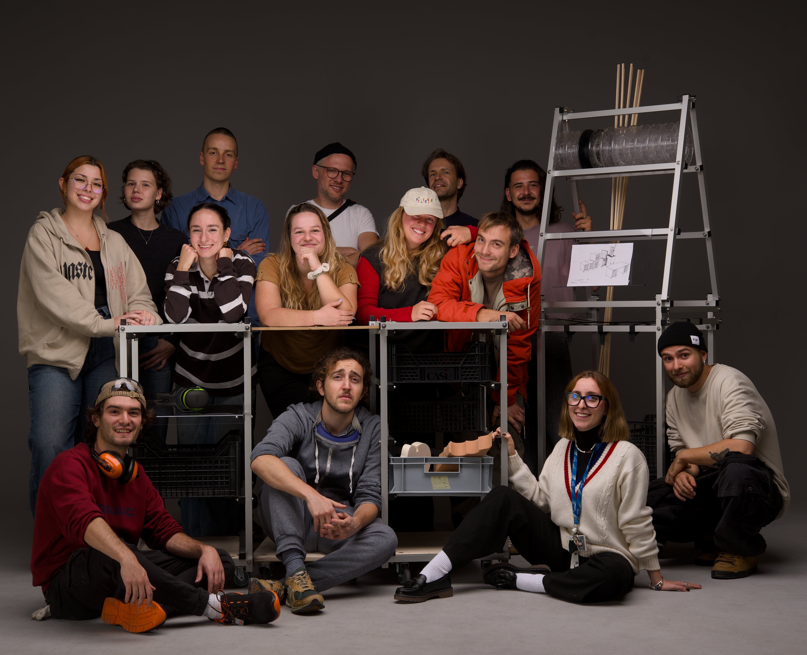
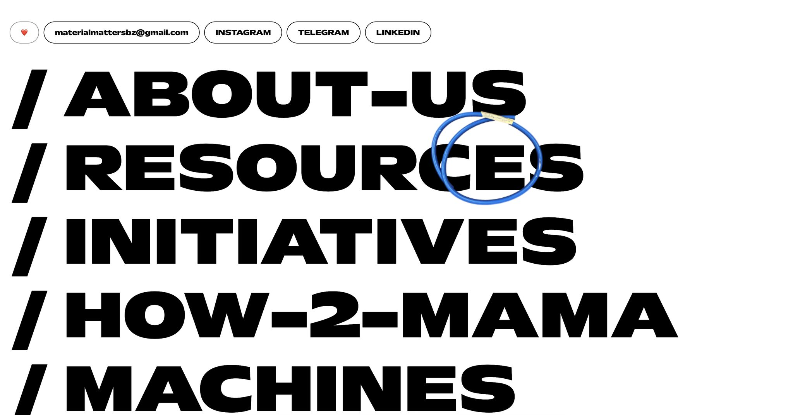
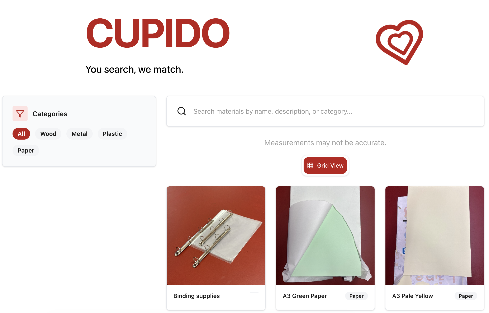
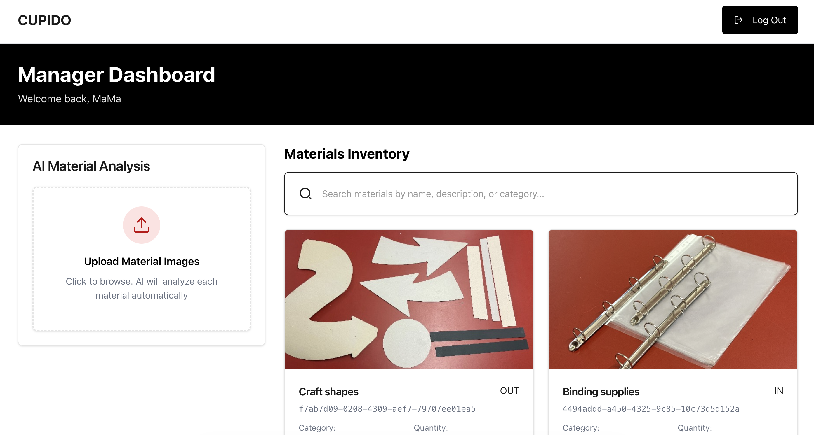

MATERIAL
MATTERS
2025
“MaMa” stands for Material Matters. Is a no profit association, UniBz student runned, which aim to reduce waste produced in the context of the university of Bolzano, and teach students sustainable design principle. In design school, a lot of offcuts are produced due to the model making process: what we do is collect, sort and stock all of those offcuts that are still usable and organize them as they are in a shop, improving accessibility to the material.
Time by time, a community was created. One of the coolest thing we have done was developing a kart system for the university with the XYZ system together with his creator, Till Wolfer. In this photo you can see some of the people that runs the iniatitve, which now counts more than 20 people.
I developed also the website of the initiative, down here and a web app.




